1984 - George Orwell
A classic, of course, but one I haven't read since school.
1Q84 - Murakami
Enjoyed the interweaving stories and the magical realism.
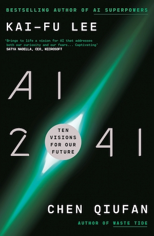
AI 2041 - Kai-Fu Lee & Chen Qiufan
I read this in 2022. It's definitely aging now (2026) better than AI-2027.
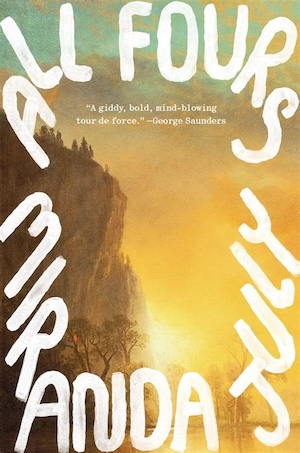
All Fours - Miranda July
All the Lovers in the Night - Mieko Kawakami
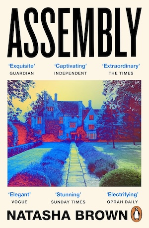
Assembly - Natasha Brown
Audition - Ryu Murakami
Pattern Recognition - William Gibson
Spook Country - William Gibson
A lot of focus on brands, colours, design. Gibson apparently said his main interest is fashion, and he the novels are primarily a vessel for that.
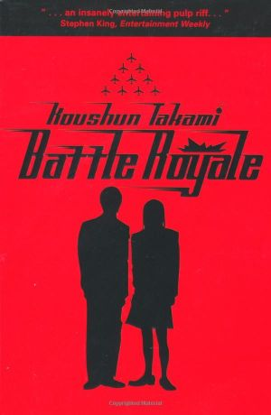
Battle Royale - Koushun Takami
Beneath the Surface - Lindsay Buroker
The Big Sleep - Raymond Chandler
Black House - Stephen King & Peter Straub
Blood Meridian - Cormac McCarthy
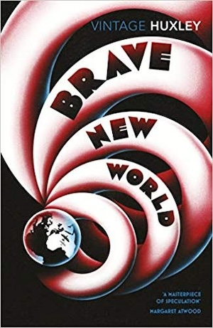
Brave New World - Aldous Huxley
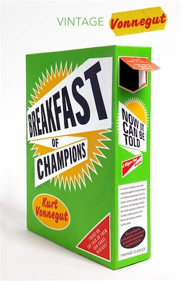
Breakfast of Champions - Kurt Vonnegut
The Brothers Karamazov - Fyodor Dostoevsky
Burmese Days - George Orwell
The Call of the Wild - Jack London
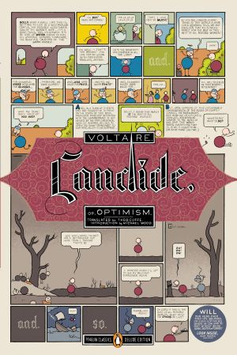
Candide - Voltaire
A Canticle for Leibowitz - Walter M. Miller Jr.
Loved this, and enjoyed the illustrated Folio Society hardback. Science, faith, state power, and whether we're doomed to do it all again and again.
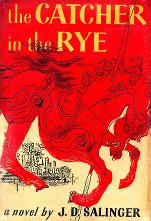
The Catcher in the Rye - J. D. Salinger
Cell - Stephen King
Circe - Madeline Miller
A Clockwork Orange - Anthony Burgess
Conspiracy - Lindsay Buroker
Crash - J. G. Ballard
Dark Currents - Lindsay Buroker
The Gunslinger - Stephen King
The Drawing of the Three - Stephen King
The Waste Lands - Stephen King
Wizard and Glass - Stephen King
Wolves of the Calla - Stephen King
Song of Susannah - Stephen King
The Dark Tower - Stephen King
Death of a Salesman - Arthur Miller
The Death of Ivan Ilych - Leo Tolstoy
Desperation - Stephen King
The Devotion of Suspect X - Keigo Higashino
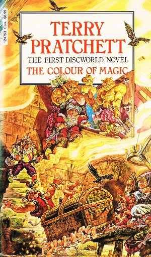
The Colour of Magic - Terry Pratchett
Down and Out in Paris and London - George Orwell
Down the Garden Path - Beverley Nichols
Dracula - Bram Stoker
It turns out what I thought was the story of Dracula was only really the first sliver of the book. A great story with compelling, heart-on-sleeve characters. Enjoyed reading it out loud and doing the voices.
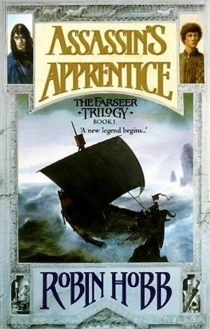
Assassin's Apprentice - Robin Hobb
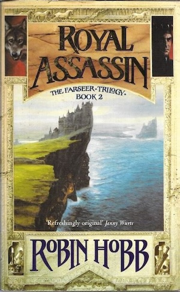
Royal Assassin - Robin Hobb
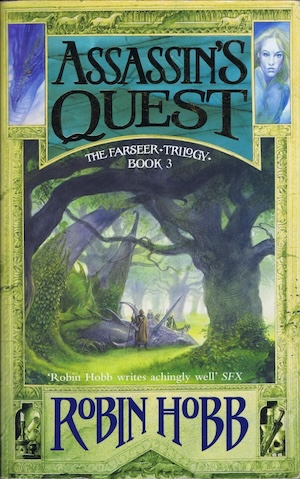
Assassin's Quest - Robin Hobb
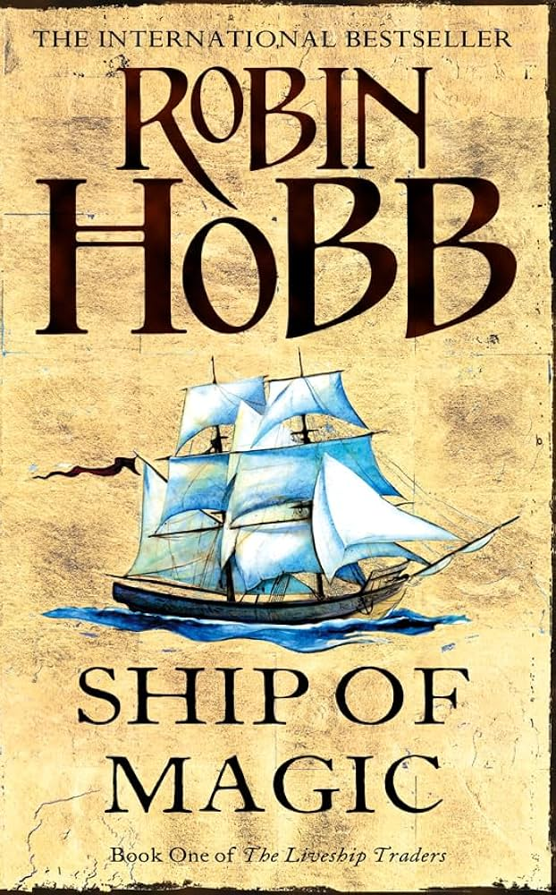
Ship of Magic - Robin Hobb
A little less crisp than I remember from the Farseer trilogy, but I don't know if that's just whiplash from how poetic Stephen Donaldson is. I love Kennit so far, or rather the peeks we get into his inner monologue that show the gulf between his carefully manicured presentation and what a baby he is inside.
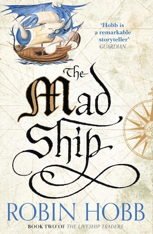
The Mad Ship - Robin Hobb
I've had enough time to get over "Where Fitz?" and am now fully invested in boat stories.
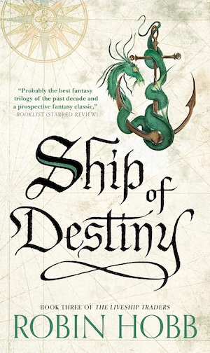
Ship of Destiny - Robin Hobb
Hooough, I don't want it to be over.
The Emperor's Edge - Lindsay Buroker
Evasion
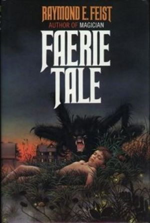
Faerie Tale - Raymond E. Feist
Fahrenheit 451 - Ray Bradbury
A Farewell to Arms - Ernest Hemingway
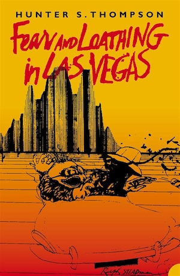
Fear and Loathing in Las Vegas - Hunter S. Thompson
Fight Club - Chuck Palahniuk
King of Ashes - Raymond E. Feist
Forged in Blood I - Lindsay Buroker
Forged in Blood II - Lindsay Buroker
Frankenstein - Mary Shelley
From Hell - Alan Moore & Eddie Campbell
A Game of Thrones - George R. R. Martin
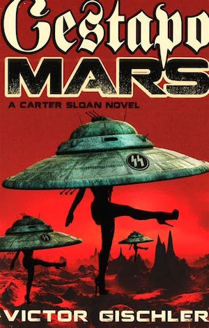
Gestapo Mars - Victor Gischler
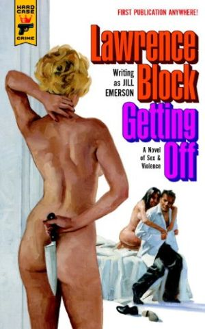
Getting Off - Lawrence Block
The Goddess Chronicle - Natsuo Kirino
Good Omens - Terry Pratchett & Neil Gaiman
Grotesque - Natsuo Kirino
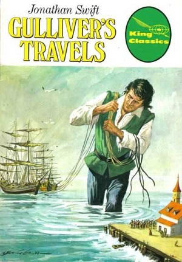
Gulliver's Travels - Jonathan Swift
Hag-Seed - Margaret Atwood
The Haunting of Hill House - Shirley Jackson
Incredible opening and doesn't get much worse from there.
The Heart Goes Last - Margaret Atwood
Heart of Darkness - Joseph Conrad
Heaven - Mieko Kawakami
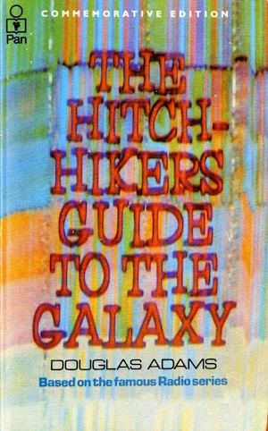
The Hitchhiker's Guide to the Galaxy - Douglas Adams
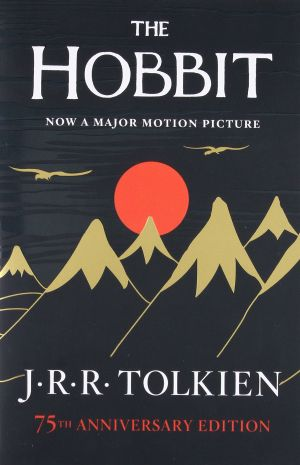
The Hobbit - J. R. R. Tolkien
House of Leaves - Mark Z. Danielewski
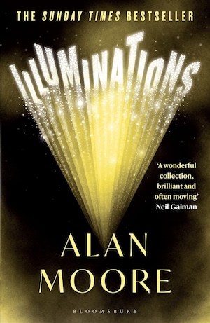
Illuminations - Alan Moore
In the Miso Soup - Ryu Murakami
Insomnia - Stephen King
Jamrach's Menagerie - Carol Birch
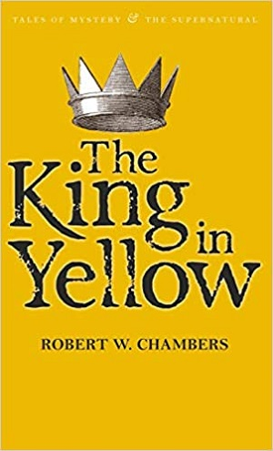
The King in Yellow - Robert W. Chambers
Started off eldritch horror, finished a bit Jeeves & Wooster.
The Kite Runner - Khaled Hosseini
The Lies of Locke Lamora - Scott Lynch
Red Seas Under Red Skies - Scott Lynch
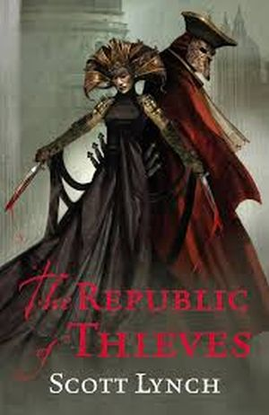
The Republic of Thieves - Scott Lynch
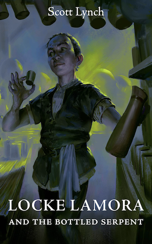
Locke Lamora and the Bottled Serpent - Scott Lynch
Please. I need Thorn of Emberlain.
Life of Pi - Yann Martel
Lincoln in the Bardo - George Saunders
Lockpick Pornography - Joey Comeau
Lord of the Flies - William Golding
Lord Foul's Bane - Stephen Donaldson
Donaldson manages to create a sympathetic protagonist out of a man who is not very nice most of the time. Very Lord of the Rings (complimentary). I'm looking forward to the rest of the series.
The Fellowship of the Ring - J. R. R. Tolkien
The Two Towers - J. R. R. Tolkien
The Return of the King - J. R. R. Tolkien
Malice - Keigo Higashino
The Merchant of Venice - William Shakespeare
The Metamorphosis - Franz Kafka
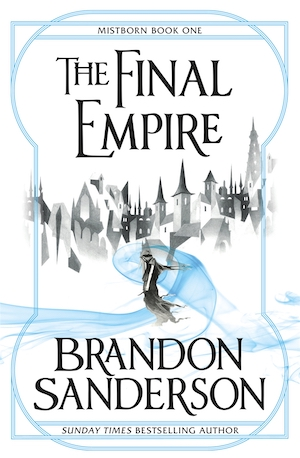
The Final Empire - Brandon Sanderson
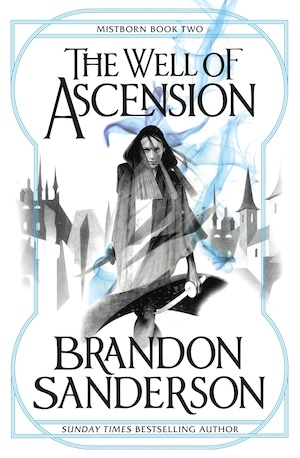
The Well of Ascension - Brandon Sanderson
The Hero of Ages - Brandon Sanderson
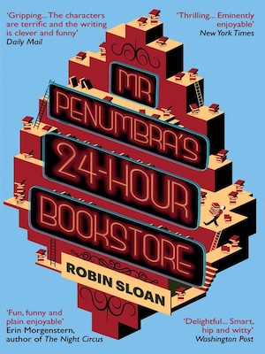
Mr Penumbra's 24 Hour Book Store - Robin Sloan
I spent most of the time kind of annoyed by the dorky protagonist, but it was a fun mystery adventure. One of the key takeaways is that being a Ruby programmer is an attractive trait, so... I'll take it.
Municipal Gothic - Ray Newman
Ghost stories in a traditional vein, taken out of a Victorian setting and told in council estates and neglected parts of the city. A fairly breezy read at 13 short stories. Enjoyed them a lot. Keen to read more of his work.
My Best Friend's Exorcism - Grady Hendrix
Pulpy, trashy, a lot of fun.
My Evil Mother - Margaret Atwood
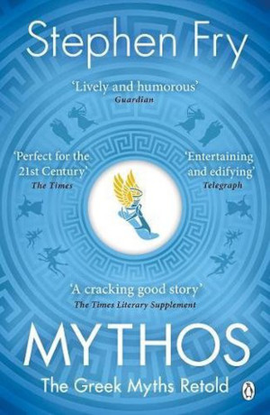
Mythos - Stephen Fry
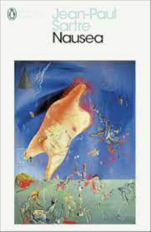
Nausea - Jean-Paul Sartre
Neuromancer - William Gibson
The Night Circus - Erin Morgenstern
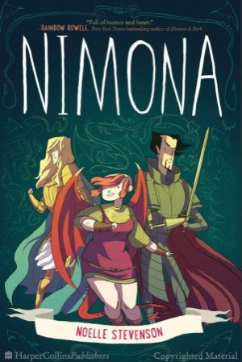
Nimona - Noelle Stevenson
No One Is Talking About This - Patricia Lockwood
Oryx and Crake - Margaret Atwood
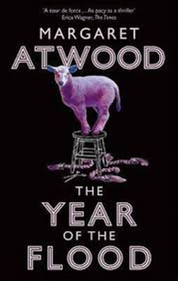
The Year of the Flood - Margaret Atwood
MaddAddam - Margaret Atwood
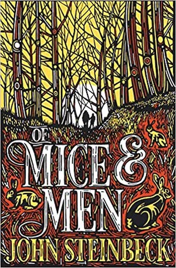
Of Mice and Men - John Steinbeck
On the Calculation of Volume I - Solvej Balle
★★★
Quiet, lonely, November 18th. More meditative than Groundhog Day.
One Day in the Life of Ivan Denisovich - Aleksandr Solzhenitsyn
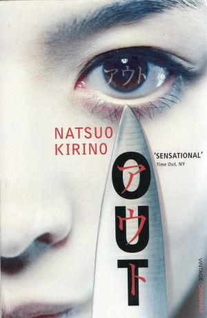
Out - Natsuo Kirino
★★★★
The best of Natsuo Kirino's crime novels, or at least the most exciting.
The Overcoat - Nikolai Gogol
Pachinko - Min Jin Lee
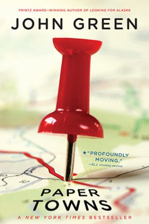
Paper Towns - John Green
Parade - Shuichi Yoshida
Perfume: The Story of a Murderer - Patrick Süskind
A Personal Matter - Kenzaburō Ōe
The Piano Tuner - Daniel Mason
The Pigeon - Patrick Süskind
Piranesi - Susanna Clarke
The Plague - Albert Camus
The Cask of Amontillado - Edgar Allan Poe
The Masque of the Red Death - Edgar Allan Poe
A Tale of the Ragged Mountains - Edgar Allan Poe
The Fall of the House of Usher - Edgar Allan Poe
William Wilson - Edgar Allan Poe
Pontypool Changes Everything - Tony Burgess
Project Hail Mary - Andy Weir
Real World - Natsuo Kirino
The Regulators - Richard Bachman
Revenge - Yoko Ogawa
Magician - Raymond E. Feist
Silverthorn - Raymond E. Feist
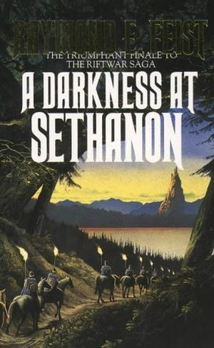
A Darkness at Sethanon - Raymond E. Feist
Daughter of the Empire - Raymond E. Feist & Janny Wurts
Servant of the Empire - Raymond E. Feist & Janny Wurts
Mistress of the Empire - Raymond E. Feist & Janny Wurts
Prince of the Blood - Raymond E. Feist
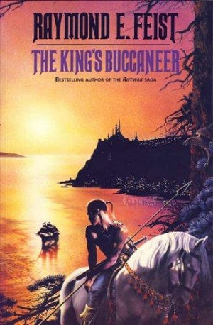
The King's Buccaneer - Raymond E. Feist
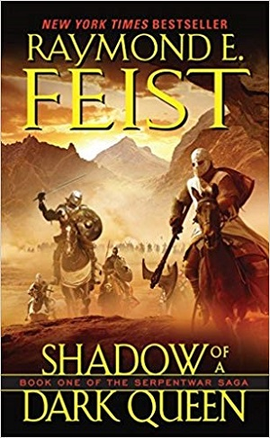
Shadow of a Dark Queen - Raymond E. Feist
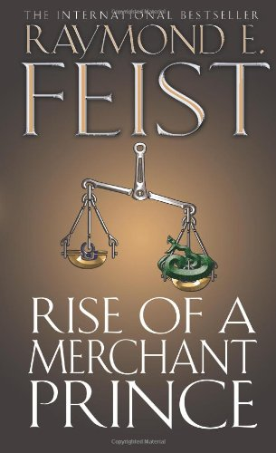
Rise of a Merchant Prince - Raymond E. Feist
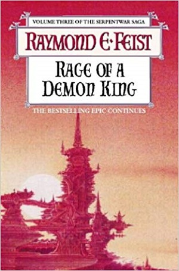
Rage of a Demon King - Raymond E. Feist
Shards of a Broken Crown - Raymond E. Feist
Krondor: The Betrayal - Raymond E. Feist
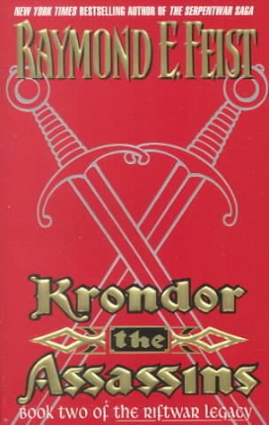
Krondor: The Assassins - Raymond E. Feist
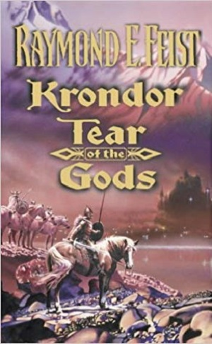
Krondor: Tear of the Gods - Raymond E. Feist
Honored Enemy - Raymond E. Feist & William R. Forstchen
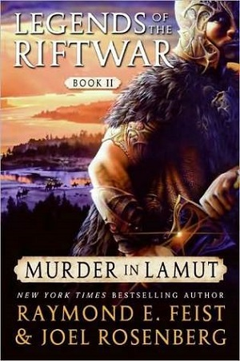
Murder in LaMut - Raymond E. Feist & Joel Rosenberg
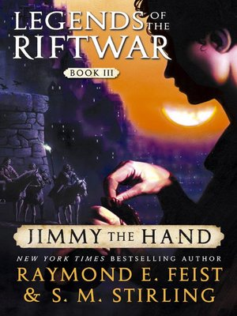
Jimmy the Hand - Raymond E. Feist & S. M. Stirling
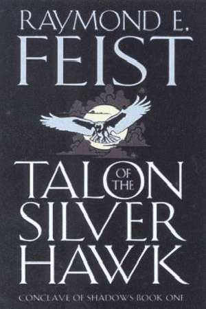
Talon of the Silver Hawk - Raymond E. Feist
King of Foxes - Raymond E. Feist
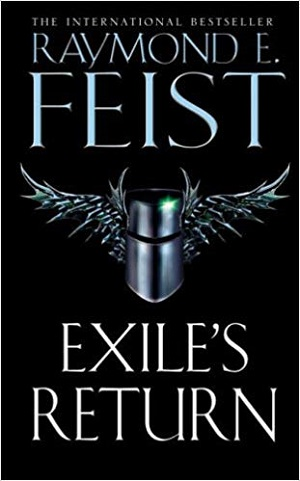
Exile's Return - Raymond E. Feist
Flight of the Night Hawks - Raymond E. Feist
Into a Dark Realm - Raymond E. Feist
Wrath of a Mad God - Raymond E. Feist
The Road - Cormac McCarthy
Roadside Picnic - Arkady & Boris Strugatsky
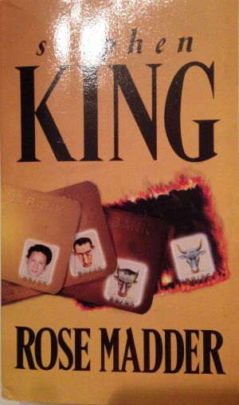
Rose Madder - Stephen King
Salvation of a Saint - Keigo Higashino
A Scanner Darkly - Philip K. Dick
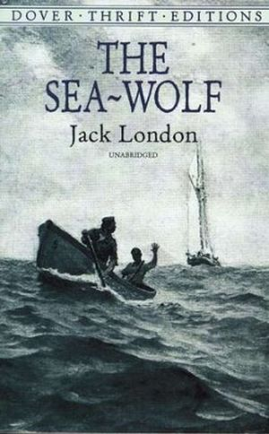
The Sea-Wolf - Jack London
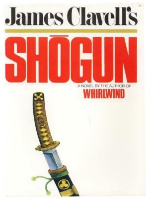
Shōgun - James Clavell
A Short History of Tractors in Ukrainian - Marina Lewycka
The Sisters Brothers - Patrick deWitt
Six Four - Hideo Yokoyama
Slaughterhouse-Five - Kurt Vonnegut
Snow Crash - Neal Stephenson
Something Wicked This Way Comes - Ray Bradbury
The Song of Achilles - Madeline Miller
The Sorrows of Young Werther - Johann Wolfgang von Goethe
The Sound and the Fury - William Faulkner
South of the Border, West of the Sun - Haruki Murakami
The Strange Case of Dr. Jekyll and Mr. Hyde - Robert Louis Stevenson
The Stranger - Albert Camus
The Talisman - Stephen King & Peter Straub
The Terror - Dan Simmons
Claustrophobic, creepy, terrible monster and some terrible people.
A Thousand Splendid Suns - Khaled Hosseini
The Three-Body Problem - Cixin Liu
Three Sisters - Bi Feiyu
Houuugh, tough going. Not what I would call a "fun" book, but worth reading.
The Tommyknockers - Stephen King
Tomorrow, When the War Began - John Marsden
Torture Garden - Octave Mirbeau
Treasure Island - Robert Louis Stevenson
The Trial - Franz Kafka
I read this during a period during which I was taking care of some pretty gnarly life admin, which really enhanced the fever stress dream feeling of the book.
Trust Exercise - Susan Choi
The Turn of the Screw - Henry James
Ubik - Philip K. Dick
Under the Dome - Stephen King
V for Vendetta - Alan Moore & David Lloyd
The Vegetarian - Han Kang
Good, but grim.
Vernon God Little - DBC Pierre
Very Good, Jeeves - P. G. Wodehouse
A View from the Bridge - Arthur Miller
Virtual Light - William Gibson
We - Yevgeny Zamyatin
Wicked - Gregory Maguire
The Young Immigrunts - Ring W. Lardner Jr.
The Young Visiters - Daisy Ashford
Happened to find this in a cupboard in a bed & breakfast. Read in one sitting, greatly enjoyed.
Zen and the Art of Motorcycle Maintenance - Robert M. Pirsig
Accelerate - Nicole Forsgren, Jez Humble & Gene Kim
An Introduction to Digital Healthcare in the NHS - Gary McAllister
Don't Make Me Think, Revisited - Steve Krug
It Doesn't Have to Be Crazy at Work - Jason Fried & David Heinemeier Hansson
Remote: Office Not Required - Jason Fried & David Heinemeier Hansson
Shape Up - Ryan Singer
The Staff Engineer's Path - Tanya Reilly
Staff Engineer - Will Larson
Team Topologies - Matthew Skelton & Manuel Pais
The Checklist Manifesto - Atul Gawande
The Hard Thing About Hard Things - Ben Horowitz
The Lean Startup - Eric Ries
The Phoenix Project - Gene Kim, Kevin Behr & George Spafford
The Unicorn Project - Gene Kim
The War of Art - Steven Pressfield
Fifty Things You Need to Know About British History - Hugh Williams
5/3/1 - Jim Wendler
The 7 Habits of Highly Effective People - Stephen R. Covey
Against the Machine - Paul Kingsnorth
Extremely mixed feelings. Sharp in places, baffling in others. Just transphobic rambling at points. Nearly DNF'd.
All Creatures Great and Small - James Herriot
All the Beauty in the World - Patrick Bringley
Anarchism: A Very Short Introduction - Colin Ward
The Anarchy - William Dalrymple
I knew almost nothing about the history of India going into this, and learned so much.
Angry White Pyjamas - Robert Twigger
The Art of Peace - Morihei Ueshiba
The Art of War - Sun Tzu
At the Existentialist Café - Sarah Bakewell
Atomic Habits - James Clear
The Autobiography of Benjamin Franklin
The Autobiography of Malcolm X
Bad Blood - John Carreyrou
Blue Nights - Joan Didion
The Body: A Guide for Occupants - Bill Bryson
Careless People - Sarah Wynn-Williams
Just put it all in the bin, frankly. Facebook, I mean, not this book. The book can go on a shelf, probably. I greatly enjoy the Tech-dumpster-fire genre, and Careless People does not disappoint.
Cinema Speculation - Quentin Tarantino
An enjoyable trip through a particular era of US cinema, as told by someone who grew up glued to the screen. Tarantino took a (verbal) swing at Paul Dano not long after I finished reading this, so take any opinions with a heap of salt. I love Paul Dano.
Johann Wolfgang von Goethe - Jeremy Adler
Crucial Conversations - Patterson, Grenny, McMillan & Switzler
The Cryptopians - Laura Shin
Days of War, Nights of Love - CrimethInc.
Deep Work - Cal Newport
The Design of Everyday Things - Donald A. Norman
Digital Minimalism - Cal Newport
Do What You Want: The Story of Bad Religion - Bad Religion with Jim Ruland
Ego Is the Enemy - Ryan Holiday
Erebus: The Story of a Ship - Michael Palin
Every Man For Himself and God Against All - Werner Herzog
Werner Herzog might be insane, or at least operating on a different tier of sanity than we’re used to.
Factfulness - Hans Rosling
Fahrenheit-182 - Mark Hoppus
I was (am) a big Blink fan, so it was cool getting the behind-the-scenes.
Feminism: A Very Short Introduction - Margaret Walters
Fighting For Our Lives - CrimethInc.
Four Thousand Weeks - Oliver Burkeman
Freedom Is a Constant Struggle - Angela Y. Davis
From Dilemmas to Decisions - Joey Corea
Genius and Discovery - Stefan Zweig
Get Better at Anything - Scott H. Young
Getting Things Done - David Allen
Getting to Yes - Roger Fisher & William Ury
Going Infinite - Michael Lewis
Granny Made Me an Anarchist - Stuart Christie
Homage to Catalonia - George Orwell
How to Be an Antiracist - Ibram X. Kendi
How to Do Nothing - Jenny Odell
How to Live on 24 Hours a Day - Arnold Bennett
How to Live - Derek Sivers
How to Take Smart Notes - Sönke Ahrens
How to Travel with a Salmon - Umberto Eco
How to Win Friends and Influence People - Dale Carnegie
Idle Thoughts of an Idle Fellow - Jerome K. Jerome
Kind of old fashioned (read: sexist) in some of its content, but funny.
An Idler's Manual - Tom Hodgkinson
A light and entertaining read, as you might expect from the editor of the nation's premier magazine for loafers.
Into Thin Air - Jon Krakauer
Kissa by Kissa - Craig Mod
Kitchen Confidential - Anthony Bourdain
Leadership Is Language - L. David Marquet
Let Me Tell You What I Mean - Joan Didion
Letters from a Stoic - Seneca
Letters of Note - Shaun Usher
A Life in Parts - Bryan Cranston
A Life on Our Planet - David Attenborough
Lying - Sam Harris
Mad, Bad & Dangerous to Know - Ranulph Fiennes
Really enjoyed his Shackleton book, so wanted to learn more about the guy himself. Main lesson is that I do not have what it takes to be a polar explorer.
The Man from the Future - Ananyo Bhattacharya
Meditations for Mortals - Oliver Burkeman
Meditations - Marcus Aurelius
Moab Is My Washpot - Stephen Fry
Mood Machine - Liz Pelly
Helped me better appreciate the tough economics of the music industry and how the odds are stacked against musicians.
Mortality - Christopher Hitchens
The Mutt - Rodney Mullen
The Myth of Sisyphus - Albert Camus
Noise - Daniel Kahneman, Olivier Sibony & Cass R. Sunstein
The Notebook: A History of Thinking on Paper - Roland Allen
I really enjoyed this read. Very interesting, very inspiring.
Notes from a Small Island - Bill Bryson
Notes on a Nervous Planet - Matt Haig
Notes to John - Joan Didion
A summary of Joan's meetings with her therapist, mainly regarding Quintana’s alcoholism, written as a series of letters to her husband John. Knowing how things would unfold (The Year of Magical Thinking, Blue Nights) made this a tough read.
The Obstacle Is the Way - Ryan Holiday
On Writing Well - William Zinsser
On Writing - Stephen King
People Who Eat Darkness - Richard Lloyd Parry
The Power of Habit - Charles Duhigg
Priestdaddy - Patricia Lockwood
A Promised Land - Barack Obama
The Psychopath Code - Pieter Hintjens
Radical Candor - Kim Scott
Recipes for Disaster - CrimethInc.
The Republic of Pirates - Colin Woodard
The Road to Wigan Pier - George Orwell
Shackleton - Ranulph Fiennes
The Shepherd's Life - James Rebanks
Shoe Dog - Phil Knight
Shop Class as Soulcraft - Matthew B. Crawford
A Short History of Nearly Everything - Bill Bryson
Slouching Towards Bethlehem - Joan Didion
Slow Productivity - Cal Newport
So Good They Can't Ignore You - Cal Newport
So You've Been Publicly Shamed - Jon Ronson
Spam Nation - Brian Krebs
Start with Why - Simon Sinek
Stay Sexy & Don't Get Murdered - Karen Kilgariff & Georgia Hardstark
Steal This Book - Abbie Hoffman
Such, Such Were the Joys - George Orwell
Super-Infinite - Katherine Rundell
Super Pumped: The Battle for Uber - Mike Isaac
Surely You're Joking, Mr. Feynman! - Richard P. Feynman
Talking to Strangers - Malcolm Gladwell
Tao Te Ching - Lao-Tzu
Things Become Other Things (RH ed.) - Craig Mod
A masterful expansion on the fine-art edition. Struggled with the B&W photos when reading in a dimly lit room.
Things Become Other Things - Craig Mod
Think Again - Adam Grant
Thinking, Fast and Slow - Daniel Kahneman
The Time Traveler's Guide to Medieval England - Ian Mortimer
Tokyo Vice - Jake Adelstein
Total Recall - Arnold Schwarzenegger
Tranny - Laura Jane Grace
Ultralearning - Scott H. Young
Unruly - David Mitchell
Useful Not True - Derek Sivers
I previously read his book How To Live, and I enjoy Derek Sivers' brief, thought-provoking books. Both books are less about giving you answers and more about helping you ask good questions. https://sive.rs/u
The Wager - David Grann
A real page turner. It's got boats, it's got mutinies, it's got drama, it's got everything.
Walden; or, Life in the Woods - Henry David Thoreau
A Walk in the Woods - Bill Bryson
Walking the Great North Line - Robert Twigger
I love a walking memoir, and this is the second Robert Twigger book I've read since Angry White Pyjamas.
The Way of Excellence - Brad Stulberg
Slow and steady. That's how to do it.
The White Album - Joan Didion
Why I'm No Longer Talking to White People About Race - Reni Eddo-Lodge
Wintering - Katherine May
Rest and retreat, in a year where I needed a lot of rest and retreat.
A Woman in the Polar Night - Christiane Ritter
A beautifully written memoir of a woman's time in the arctic.
A World Without Email - Cal Newport
The Year of Magical Thinking - Joan Didion
Bridge to the Soul - Rumi
The Rubáiyát of Omar Khayyám
A great work of poetry as translated by Edward Fitzgerald. Turned onto this by a column in Idler.
Side Wounds - Lena Oleanderson
A book of poetry, mostly about their friend's suicide at 17 and their relationship with faith.
97 Things Every Programmer Should Know - Kevlin Henney
99 Bottles of OOP - Sandi Metz & Katrina Owen
Animation at Work - Rachel Nabors
Apprenticeship Patterns - David H. Hoover & Adewale Oshineye
Building High Performance Agile Teams - Made Tech
Code Complete 2 - Steve McConnell
Confident Ruby - Avdi Grimm
Effective Testing with RSpec 3 - Myron Marston & Ian Dees
Exceptional Ruby - Avdi Grimm
The Kubernetes Book - Nigel Poulton
Modern Software Engineering - David Farley
The New CSS Layout - Rachel Andrew
Practical Object-Oriented Design in Ruby - Sandi Metz
The Pragmatic Programmer - David Thomas & Andrew Hunt
Rebuilding Rails - Noah Gibbs
Refactoring UI - Adam Wathan & Steve Schoger
The Ruby on Rails Performance Apocrypha - Nate Berkopec
Ruby Science - thoughtbot
Sidekiq in Practice - Nate Berkopec
Soft Skills - John Z. Sonmez
Software Engineering at Google - Titus Winters, Tom Manshreck & Hyrum Wright
Test-Driven Development By Example - Kent Beck
The Well-Grounded Rubyist - David A. Black
Why's (Poignant) Guide to Ruby - why the lucky stiff